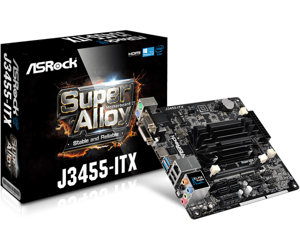
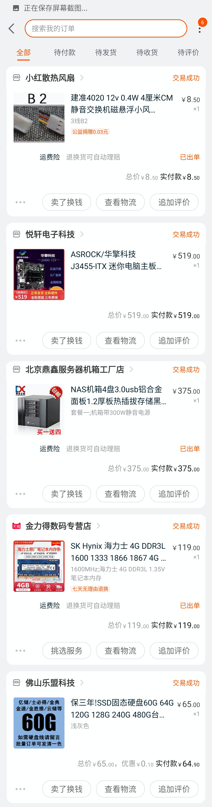

哪个男孩子不想拥有一台属于自己的NAS呢
前言
全功能覆盖的的家庭影音与智能化家居，诱惑是非常大的，NAS用作存储，HTPC用作影音设备、游戏串流及云端电脑，各种自动化电器……
而NAS基本工作是巨量数据的存储的同步，优质的NAS可以做到更多的数据处理工作，以及部分服务器功能。例如：下载机、影音中心、私人网盘、智能家居中心、毛片收集库存(误)
综上所述，作为新时代青年，为生活增智慧，一台NAS还是很有必要的。
本系列分为：装机篇、系统篇、常用软件篇、外网访问篇、优化篇
开始
需求
快 作为NAS，当然要传输速度快，一般来讲家用带宽1Gbps足够使用，同时注意搭配超五类以上的网线(CAT5e，CAT6…)
稳 一台每周7*24h开机的设备，既然要持续运行，稳定也是最重要的。硬件稳定，电源稳定是基础，以及数据的备份与恢复，这都不能保证就别做NAS了，如果有奇特的钞能力，购入一台VPS简直香炸。
省 全年无休止运作的机子，电费也是一大笔开支，对于硬件，低功耗也先于性能。tdp15-25W的CPU是博主能接受的极限（开一年是真的贵）
切莫为了省去一点硬件费用直接改造破旧老主机，使用破旧老硬盘，为了省这一点钱，老主机动辄34nm的制程，60W+的TDP，一年几千的的电费也不是闹着玩的，况且旧主板使用的sata和pcie协议过于老旧，带宽无法满足需求以及后期的盘位，网卡，硬解码显卡的扩展，因此极其不建议改造老旧主机作为NAS服务器
CPU主板
一般来讲TDP处于15-25的U是非常推荐的，Intel和AMD家的U也没什么大的差别（但是AMD YES！）个人的机子使用的是华擎J3455主板套装，低功耗的4C4T着实让人爱不释手，也是继J1900后的NAS常用U之一，拥有完美的黑群晖驱动（尽管我没用），板载4 sata3接口，1 pciex16，以及一个只能接Wi-Fi网卡的M.2，除了没有sata M.2 简直香炸，京东就有。

显卡
一般用作硬解码4k 甚至 8k视频，J3455自带核显可驱动桌面，如需性能更高的显卡，建议RX580矿卡足够
机箱
蜗牛星际机箱，4盘位12cm风扇，本人正在使用，加了乔思伯日食风扇，香的一批
电源
这个得好好整，一不爆，二声音小，我用的台达220W，噪音太大自行更换了磁悬浮4cm风扇，稳定使用中
内存条
按需求购买即可，自动纠错能上就上，记得看好自己的主板支持笔记本还是台式机内存条
其他
硬盘按需购买，网线建议CAT5E，后期有需要可以放弃显卡，扩展出万兆网口及更多sata口。个人是用了一块sata固态作为系统盘，60块不亏
最后
来一张订单配置截图

有问题欢迎评论
—–待续